Sobre
Meu nome é Jackson Vargas e tenho 20 anos, estou estudando desenvolvimento front-end a quatro anos, desde então venho sempre buscando melhorar minhas skills nessa área. Clicando neste botão abaixo você verá algumas habilidades que desenvolvi ao longo do meu aprendizado, e logo depois alguns projetos que fiz.
Skills
skills
HTML5, sigla para Hypertext Markup Language, é uma linguagem de marcação de hipertexto para apresentar e estruturar o conteúdo na web.
CSS é uma linguagem de estilo, também conhecida como folhas de estilo em cascata. É usada para personalização visual de um site. Ou seja, elas servem para otimizar o conteúdo das páginas e permitir uma apresentação mais amigável para o usuário.
JavaScript é uma linguagem de programação interpretada estruturada, de script em alto nível com tipagem dinâmica fraca e multiparadigma. Juntamente com HTML e CSS, o JavaScript é uma das três principais tecnologias da World Wide Web.
Next.js é uma estrutura da web de desenvolvimento front-end React de código aberto criada por Vercel que permite funcionalidades como renderização do lado do servidor e geração de sites estáticos para aplicativos da web baseados em React
Git é um sistema de controle de versões distribuído, usado principalmente no desenvolvimento de software, mas pode ser usado para registrar o histórico de edições de qualquer tipo de arquivo.
GitHub é uma plataforma de hospedagem de código-fonte e arquivos com controle de versão usando o Git. Ele permite que programadores, utilitários ou qualquer usuário cadastrado na plataforma contribuam em projetos privados e/ou Open Source de qualquer lugar do mundo.
Flutter é um kit de desenvolvimento de interface de usuário, de código aberto, criado pela empresa Google em 2015, baseado na linguagem de programação Dart, que possibilita a criação de aplicativos compilados nativamente, para os sistemas operacionais Android, iOS, Windows, Mac, Linux e, Fuchsia e Web.
PHP é uma linguagem interpretada livre, usada originalmente apenas para o desenvolvimento de aplicações presentes e atuantes no lado do servidor, capazes de gerar conteúdo dinâmico na World Wide Web.
O MySQL é um sistema de gerenciamento de banco de dados, que utiliza a linguagem SQL como interface. É atualmente um dos sistemas de gerenciamento de bancos de dados mais populares da Oracle Corporation, com mais de 10 milhões de instalações pelo mundo.
C# é uma linguagem de programação, multiparadigma, de tipagem forte, desenvolvida pela Microsoft como parte da plataforma .NET.
Sass é uma linguagem de folhas de estilo concebida inicialmente por Hampton Catlin e desenvolvida por Natalie Weizenbaum.
TypeScript é uma linguagem de programação de código aberto desenvolvida pela Microsoft. É um superconjunto sintático estrito de JavaScript e adiciona tipagem estática opcional à linguagem.
projects
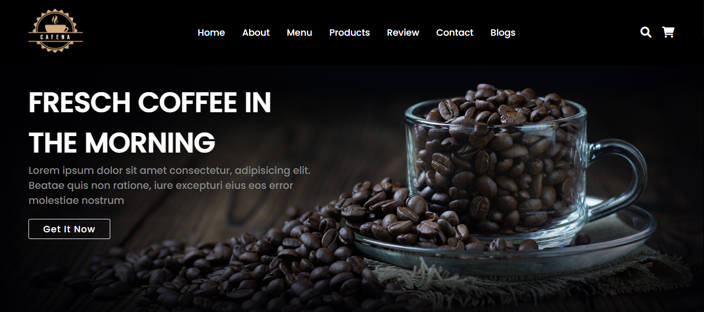
Coffee WebSite
Encontrei esse design no YouTube, achei interessante recriar ele para colocar minhas habilidades em prática para ver se eu conseguia fazer esse projeto, esse foi o resultado.
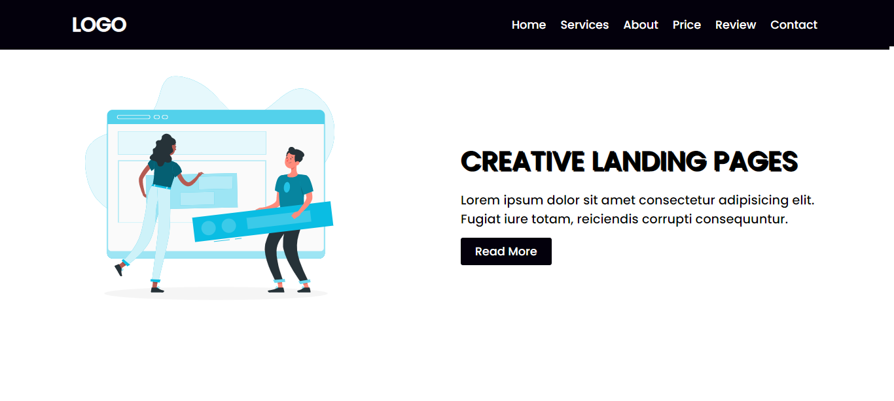
Landing Page WebSite
Esse foi um dos primeiros que fiz, eu gosto de pausar o vídeo e fazer sozinho olhando só para o design da página e não para o código, é uma forma de colocar as habilidades em prática.
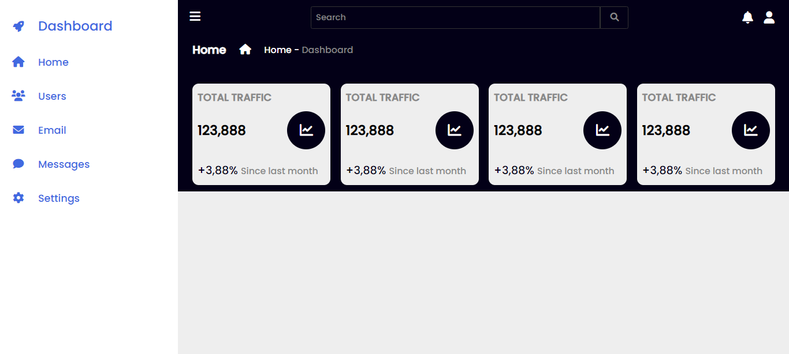
Dashboard
Fazer essa dashboard foi bem difícil para eu que estava no começo da jornada, depois que aprendi não esqueço nunca mais de como deve ser feita.
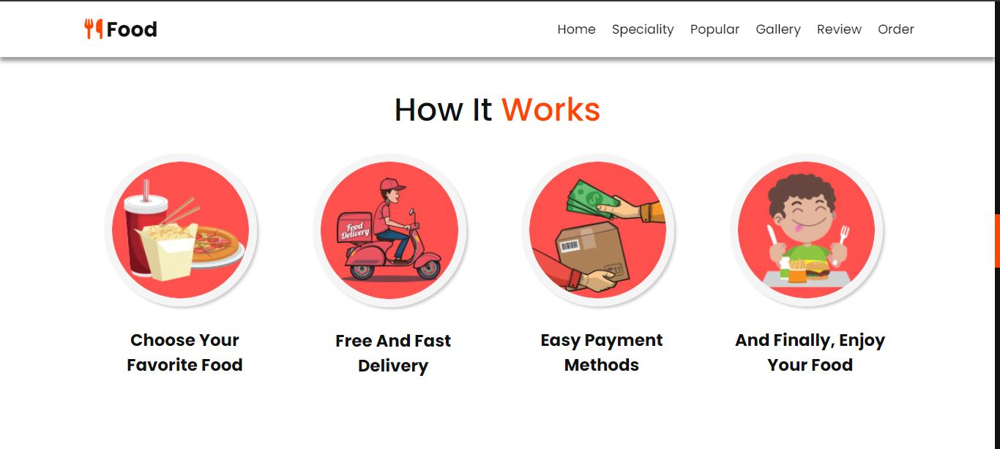
Food WebSite
Esse projeto foi o que eu mais gostei de fazer, teve um formulário de contato que levei algumas horas para fazer, mas o resultado ficou muito bom.
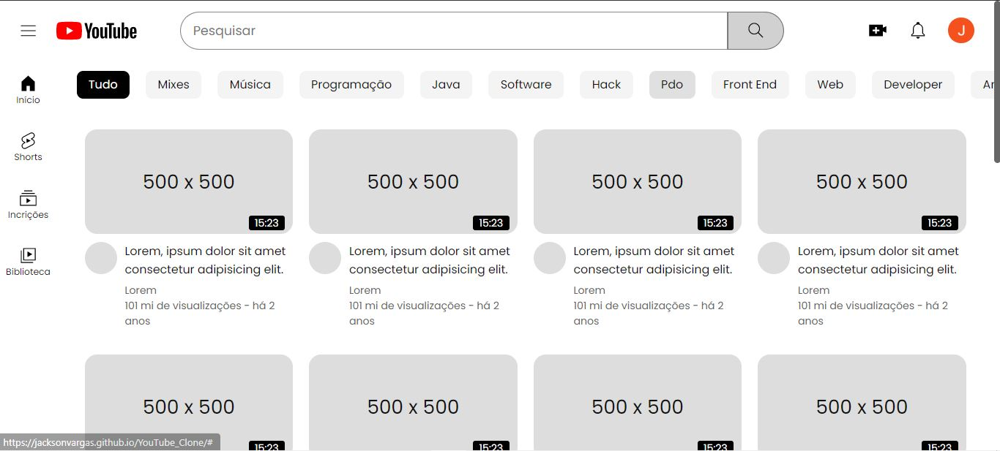
Clone YouTube
Este projeto foi bem desafiador de fazer, demorei algumas horas horas para terminar ele, mas valeu muito apena, aprendi muita coisa fazendo esse projeto.
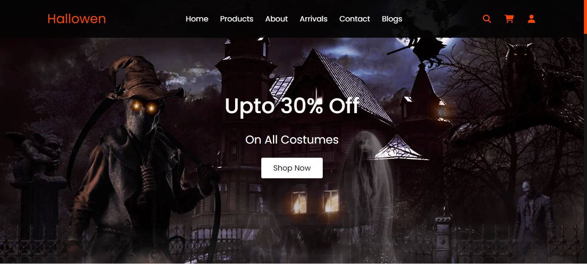
Hallowen WebSite
Este projeto foi um dos mais legais que eu fiz, gostei muito do resultado, teve algumas partes que foram um pouco desafiadoras de fazer, aprendi muito fazendo esse projeto.
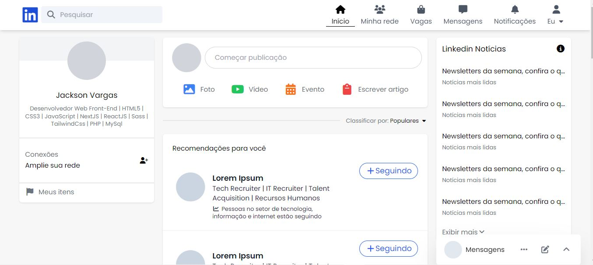
Linkedin Feed Clone
Feed do linkedin feito com TailwindCss, um dos layouts mais desafiadores que fiz.
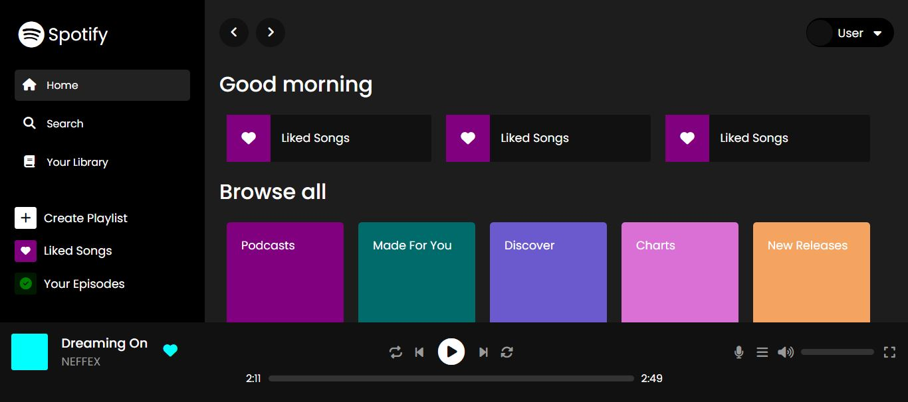
Spotify Ui Clone
Clone do Spotify feito com html e css, fiz somente a parte visual para praticar um pouco de css.
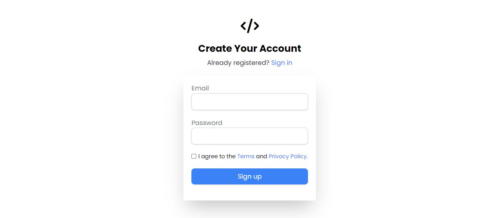
Página de Login
Tela de login feita com TailwindCss, fiz esse projeto para treinar o tailwind, estava recem começando a usar essa tecnologia.
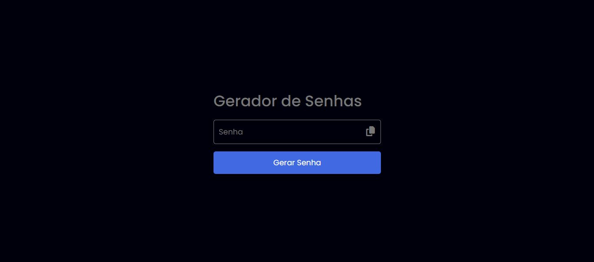
Gerador de Senha
Gerador de senha feito com javascript, o usuário pode gerar e copiar uma senha aleatória com 12 caracteres especiais.
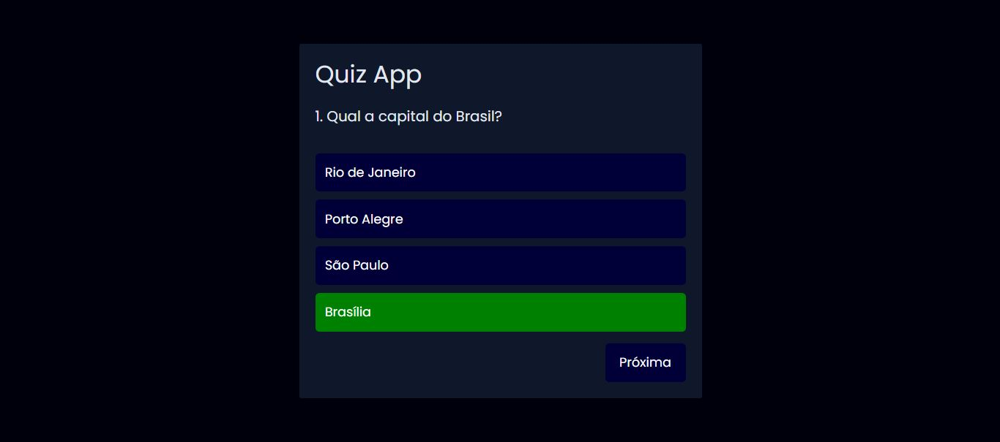
Quiz App
Quiz com estados e capitais do Brasil feito em JavaScript.